P2
Outline
-
Review of Linear Algebra
- Vector and Matrix
- Translation, Rotation, and Transformation
-
Representations of 3D rotation
- Rotation matrices
- Euler angles
- Rotation vectors/Axis angles
- Quaternions
✅ 这节课大部分内容会跳过，因为前面课程讲过好多遍了
P3
Review of Linear Algebra
Vectors and Matrices
a few slides were modified from GAMES-101 and GAMES-103
P24
✅ 两个单位向量的叉乘不一定是单位向量。
✅ 要得到方向，应先叉乘再单位化
✅ \(n=\frac{a\times b}{||a\times b||}\)（正确）、\(n=\frac{a}{||a||} \times \frac{b}{||b||}\)（错误）
P26
How to find the rotation between vectors?
问题描述
✅ 已知\(a,b\) , 求旋转。
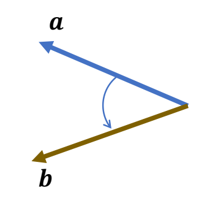
求旋转轴
P27
Any vector in the bisecting plane can be the axis
$$ 𝒖 =\frac{𝒂 × 𝒃}{||𝒂 × 𝒃||} $$
求旋转角
P28
The minimum rotation:
$$
\theta = \mathrm{arg} \cos \frac{a\cdot b}{||a||||b||}
$$
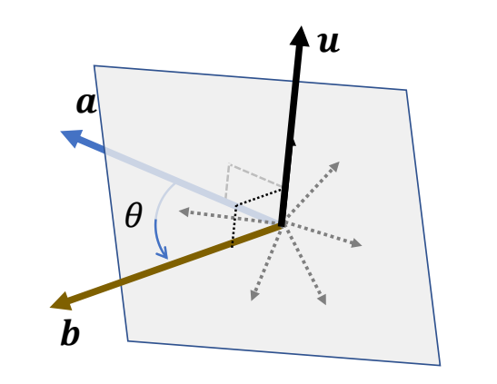
✅ \(u\) 为旋转轴，\( \theta \) 为旋转角。
P33
How to rotate a vectors?
问题描述
已知 \(a\) 和旋转 \((𝒖, \theta )\) 求终点 \(b\)
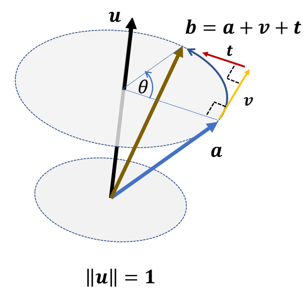
解题方法
\(a\) 移动到 \(b\) 看作是先移动 \(𝒗\) 再移动 \(t\)，分别计算 \(𝒗\) 和 \(t\) 的方向和长度。
$$ 𝒗 \gets 𝒖 \times 𝒂 $$
$$ 𝒕 \gets 𝒖 \times 𝒗 = 𝒖 \times( 𝒖 \times 𝒂) $$
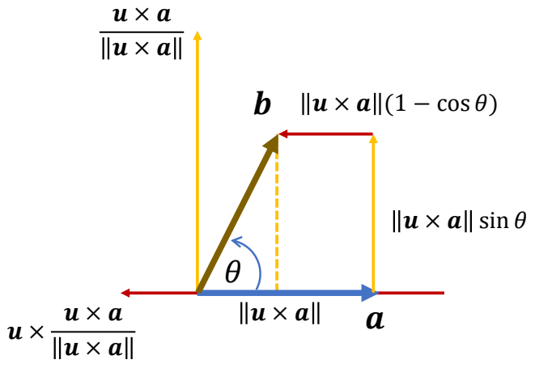
计算过程
P35
$$ 𝒗 = (\sin \theta) 𝒖 \times 𝒂 𝒕 =(1-\cos \theta ) 𝒖 \times( 𝒖 \times 𝒂) $$
Rodrigues' rotation formula
$$ 𝒃 = 𝒂 + (\sin \theta) 𝒖 × 𝒂 + (1-\cos \theta ) 𝒖 \times( 𝒖 \times 𝒂) $$
P53
Matrix
Matrix Form of Cross Product
$$ \begin{align*} c=a\times b= & \begin{bmatrix} a_yb_z-a_zb_y \\ a_zb_x-a_xb_z \\ a_xb_y-a_yb_x \end{bmatrix}\\ = & \begin{bmatrix} 0 & -a_z & a_y \\ a_z & 0 & -a_x \\ -a_y & a_x & 0 \end{bmatrix}\begin{bmatrix} b_x \\ b_y \\ b_z \end{bmatrix}=[a]_\times b \end{align*} $$
$$ [a]_\times +[a]^ \mathbf{T} _\times =0 \quad \quad \mathrm{skewsymmetric} $$
P56
$$ \begin{align*} a \times b = &[a] _ \times b \\ a \times (b \times c) = & [a] _ \times ( [b] _ \times c ) \\ = & [a] _ \times [b] _ \times c \\ a \times (a \times c) = & [a] ^2 _ \times b \\ (a \times b) \times c = & [a\times b] _ \times c \\ \end{align*} $$
✅ 最后一个公式注意一下，叉乘不满足结合律。
P57
How to rotate a vectors?
问题描述
已知 \(a\) 和旋转 \((𝒖, \theta )\) 求终点 \(b\)
把前面的结论转化为矩阵形式
$$ \begin{align*} b = & a+(\sin \theta )u \times a +(1-\cos \theta)u \times(u \times a) \\ b = & (I+(\sin \theta ))[u]_ \times + (1-(\cos \theta )[u]^2_ \times ) a \\ = & Ra \end{align*} $$
✅ 把前面的叉乘公式转化为点乘形式
结论
Rodrigues' rotation formula
$$ R = I+(\sin \theta )[u]_ \times + (1-\cos \theta )[u]^2_ \times $$
✅ \(R\) 是旋转 \((u, \theta )\) 对应的旋转矩阵。
P62
Determinant of a Matrix
定义
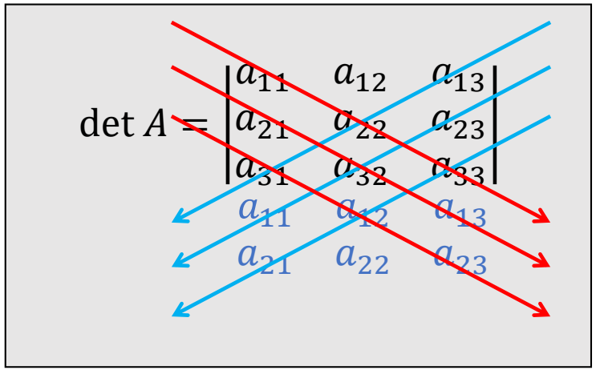
✅ 行列式的计算：红色相乘减蓝色相乘。
P63
公式
- det \(I = 1\)
- det \(AB = \text{ det } A ∗ \text{det } B\)
- det \(A^T\) = det \(A\)
- If \(A\) is invertible，det \(A^{−1}\) = \((\text{det } A)^{−1}\)
- If \(U\) is orthogonal，\(\text{det } U = ± 1\)
P64
Cross Product as a Determinant
$$ \begin{align*} c=a\times b= & \begin{bmatrix} a_yb_z-a_zb_y \\ a_zb_x-a_xb_z \\ a_xb_y-a_yb_x \end{bmatrix}\\ = & \text{det } \begin{bmatrix} i & j & k \\ a_x & a_y & a_z \\ b_x & b_y & b_z \end{bmatrix} \end{align*} $$
✅ 用行列式运算规则来计算叉乘结果。
P66
Eigenvalues and Eigenvectors
For a matrix \(A\), if a nonzero vector \(x\) satisfies
$$
Ax=\lambda x
$$
Then:
\(\lambda\): an eigenvalue of \(A\)
\(x\): an eigenvector of \(A\)
Especially, a \(3\times 3\) orthogonal matrix \(U\)
has at least one real eigenvalue: \(\lambda=\text{det } U = ±1\)
P67
Rigid Transformation
Translation, rotation, and coordinate transformation
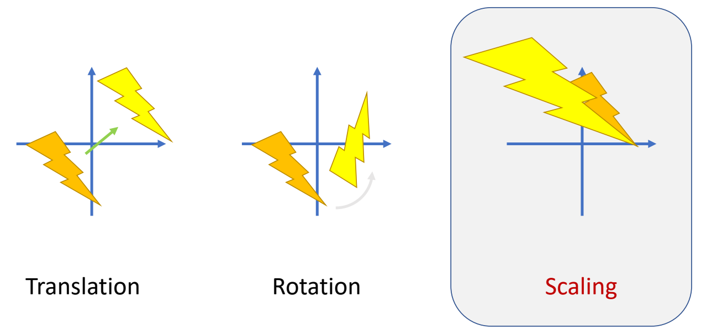
✅ 刚体变换不能改变形状和大小，因此没有Scaling
P69
Scaling
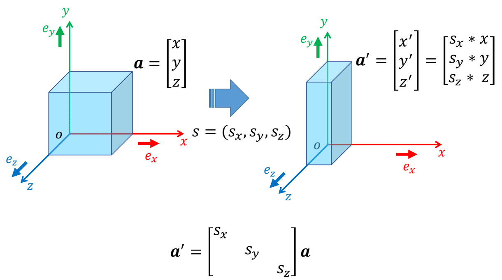
P70
Translation
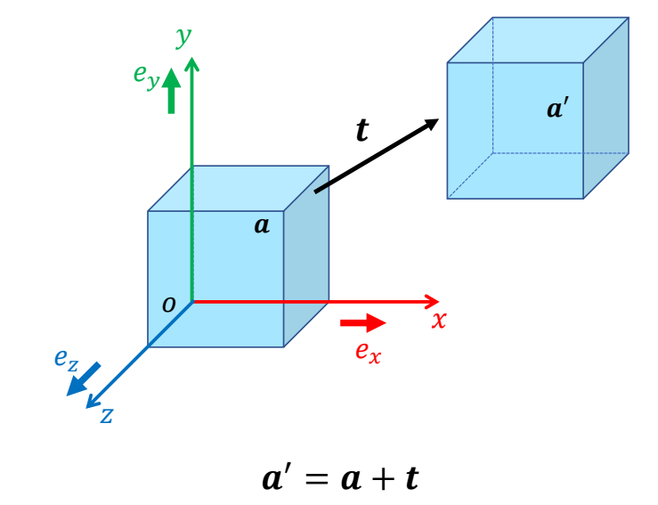
P72
Rotation
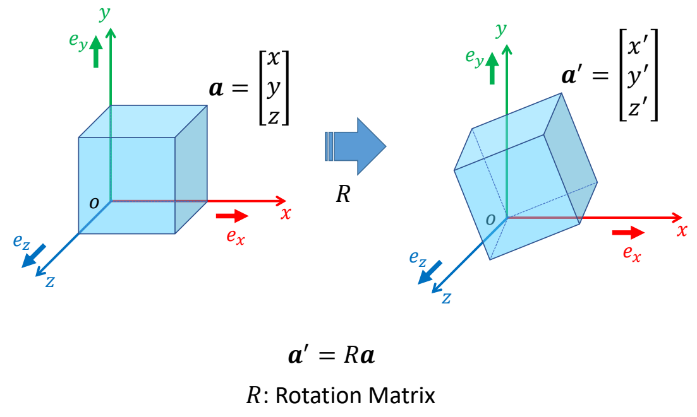
P73
Rotation Matrix
定义
- Rotation matrix is orthogonal:
$$ R^{-1}=R^{T} \quad R^TR=RR^T=1 $$
- Determinant of \(R\)
$$ \text{det } R = + 1 $$ - Rotation maintains length of vectors $$ ||Rx|| = ||x|| $$
✅ 公式2：\(R\) 不会改变左、右手系
✅ 公式3：\(R\) 是刚性变换，不改变大小
P75
Combination of Rotations
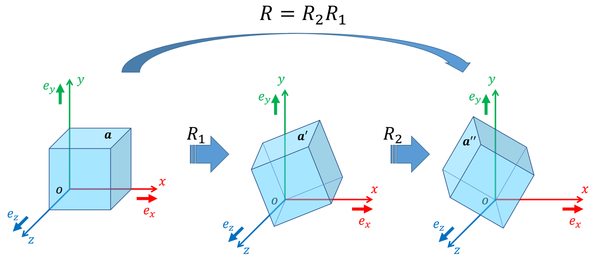
P76
Rotation around Coordinate Axes
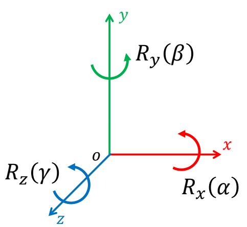
$$ R_x(\alpha )=\begin{pmatrix} 1 & 0 & 0 \\ 0 & \cos\alpha & -\sin \alpha \\ 0 & \sin \alpha & \cos \alpha \end{pmatrix} $$
$$ R_y(\beta )=\begin{pmatrix} \cos \beta & 0 & \sin \beta \\ 0 & 1 & 0 \\ -\sin \beta & 0 & \cos \beta \end{pmatrix} $$
$$ R_z(\gamma )=\begin{pmatrix} \cos \gamma & -\sin \gamma & 0 \\ \sin \gamma & \cos \gamma & 0 \\ 0 & 0 & 1 \end{pmatrix} $$
✅ 沿着哪个轴转，那个轴上的坐标不会改变。
✅ 三个基本旋转可以组合出复杂旋转。
P79
Rotation Axis and Angle
Rotation matrix \(R\) has a real eigenvalue: +1
$$
Ru=u
$$
In other words, \(R\) can be considered as a rotation around axis \(u\) by some angle \(\theta \)
How to find axis 𝒖 and angle \(\theta \)?
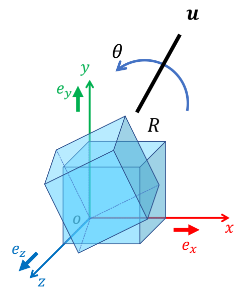
✅ 用 \(R\) 旋转时，向量 \(u\) 不会变化。
✅ 对于任意 \(R\)，都存在这样一个 \(u\).
✅ \(u\) 是 \(R\) 的旋转轴。
P80
根据旋转矩阵求轴角
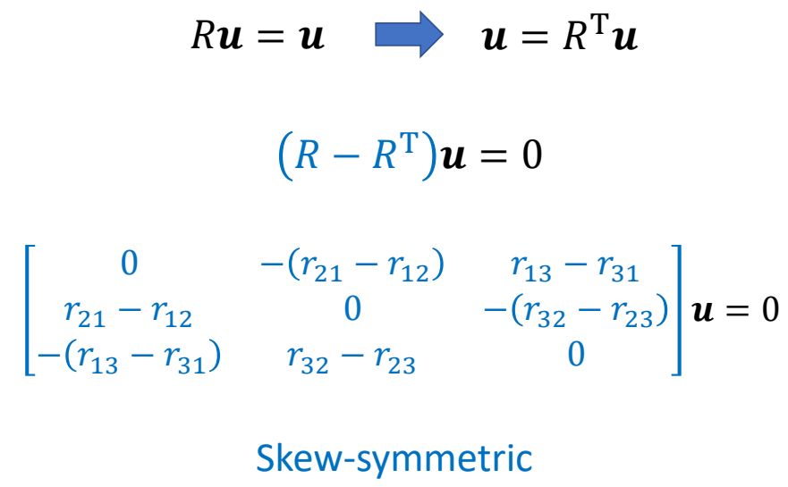
P81
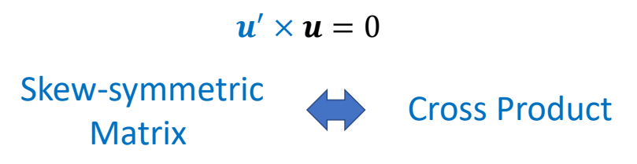
✅ \({u}' \) 与 \({u} \) 共线，\({u}' \) 单位化得到 \({u} \)．
✅ \(q\) 和 \(-q\) 两种表示方法会引入插值问题，需要注意。
P82
$$ u\gets {u}' =\begin{bmatrix} r_{32}-r_{23} \\ r_{13}-r_{31} \\ r_{21}-r_{12} \end{bmatrix} $$
$$ \text{When } R\ne R^T \Leftrightarrow \sin \theta \ne 0\Leftrightarrow \theta \ne 0^{\circ} \text{ or } 180^{\circ} $$
P83
基于罗德里格公式求轴角
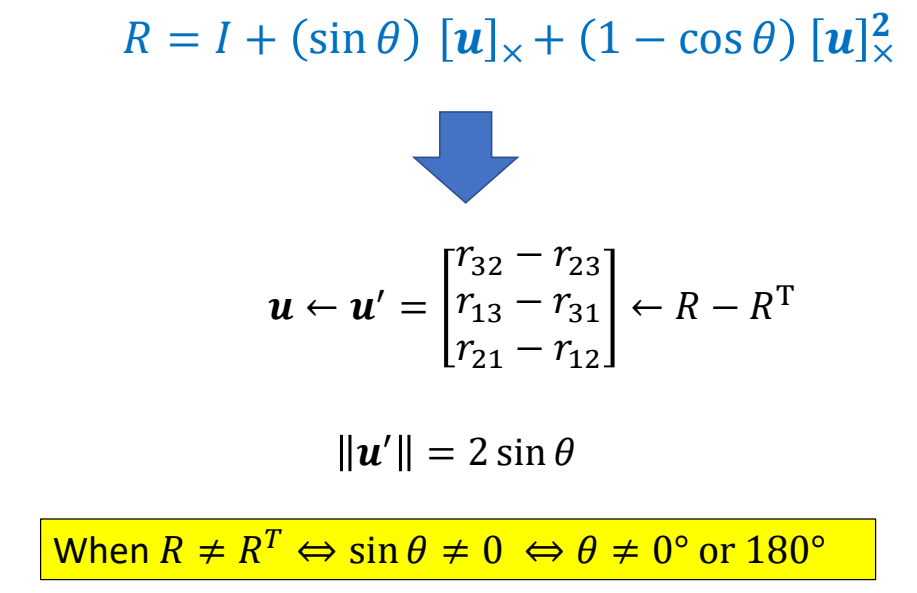
✅ 从 \(R\) 的公式也能得出相同的结论
✅ \(u → {u}' → \)旋转角度
P85
旋转矩阵的意义
旋转
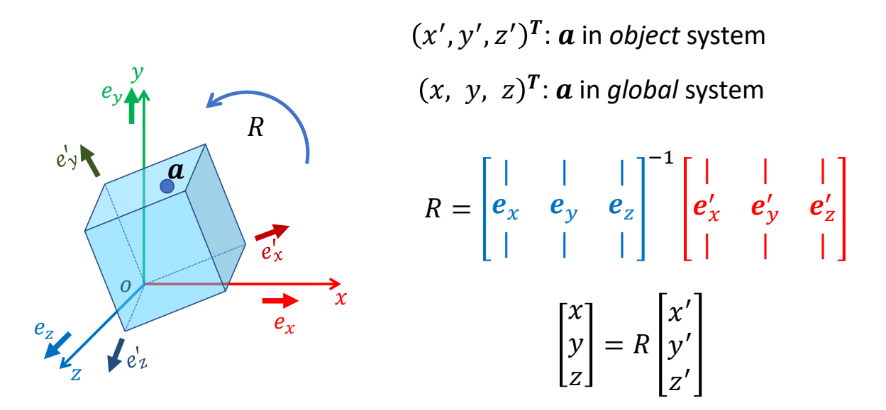
P86
旋转 + 平移
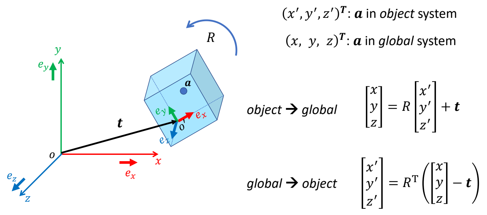
P87
Representations of 3D Rotation
P91
旋转矩阵
Parameterization of Rotation
旋转矩阵有9个参数，但实际上degrees of freedom (DoF) = 3
✅ det 只是把空间减少一半，没有降低自由度
P93
Interpolation
What is good interpolation?
- result is valid at any time \(t\)
- Constant speed is preferred
| 平移 | 旋转 | |
|---|---|---|
| 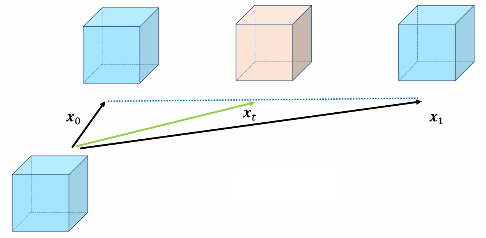 | 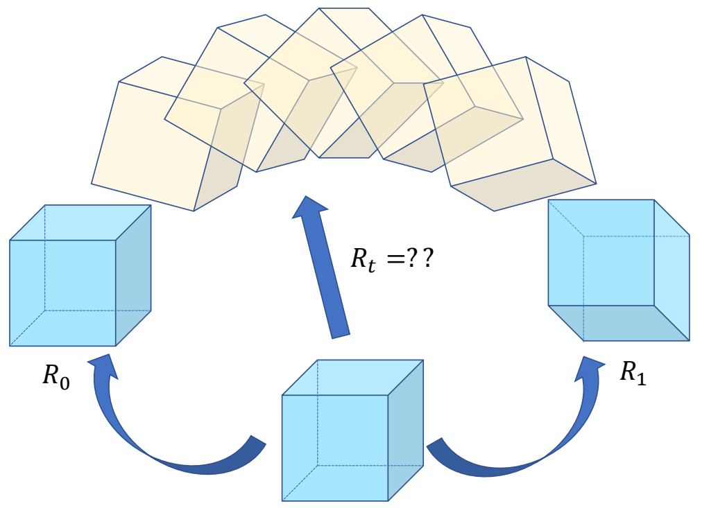 | |
| \(x_t=(1-t)x_0+tx_1\) ✅ 平移使用线性插值 | ✅ 旋转不适合线性插值。 | |
| 合法 | ✅ 对于任意 \(t\), \(x_t\) 一定是合法的。 | |
| 速度可控 | ✅ 运动的速度是常数，因此速度可控。 |
P99
结论
- Easy to compose? \(\quad \quad \quad {\color{Red} \times } \)
✅ 9个参数没有直接的意义，且为了满足正交阵，参数之间是耦合的。
- Easy to apply? \(\quad \quad \quad \quad {\color{Green} \surd }\)
- Easy to interpolate? \(\quad \quad {\color{Red} \times } \)
P100
Euler angles
Basic rotations
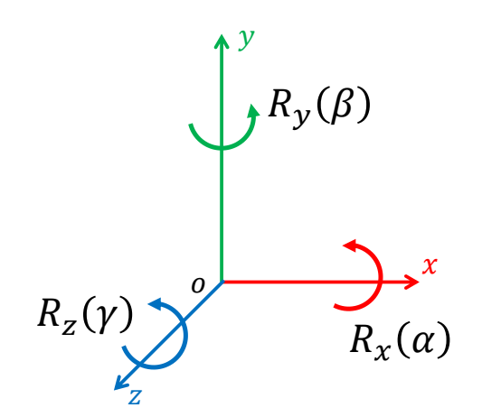
$$ R_x(\alpha )=\begin{pmatrix} 1 & 0 & 0 \\ 0 & \cos\alpha & -\sin \alpha \\ 0 & \sin \alpha & \cos \alpha \end{pmatrix} $$
$$ R_y(\beta )=\begin{pmatrix} \cos \beta & 0 & \sin \beta \\ 0 & 1 & 0 \\ -\sin \beta & 0 & \cos \beta \end{pmatrix} $$
$$ R_z(\gamma )=\begin{pmatrix} \cos \gamma & -\sin \gamma & 0 \\ \sin \gamma & \cos \gamma & 0 \\ 0 & 0 & 1 \end{pmatrix} $$
combination of three basic rotations
Any rotation can be represented as a combination of three basic rotations
P102
Any combination of three basic rotations are allowed
- Excluding those rotate twice around the same axis
- XYZ, XZY, YZX, YXZ, ZYX, ZXY, XYX, XZX, YXY, YZY, ZXZ, ZYZ
P103
Conventions of Euler Angles
intrinsic rotations: axes attached to the object
$$ R_x(\alpha )R_y(\beta )R_z(\gamma ) $$
extrinsic rotations: axes fixed to the world
$$ R_z(\gamma )R_y(\beta )R_x(\alpha ) $$
✅ 使用欧拉角时应先明确所使用的 convetion 和顺序。
✅ 不同的商业软件可能有不同的内置参数。
✅ maya 和 unity 都是 extrinsic.
✅ maya 可选顺序，Unity 固定 Zxy
P104
Gimbal Lock
When two local axes are driven into a parallel configuration, one degree of freedom is “locked”
✅ 当其中两个轴共线时，会丢失一个自由度，此时表示不唯一（奇异点）
P105
结论
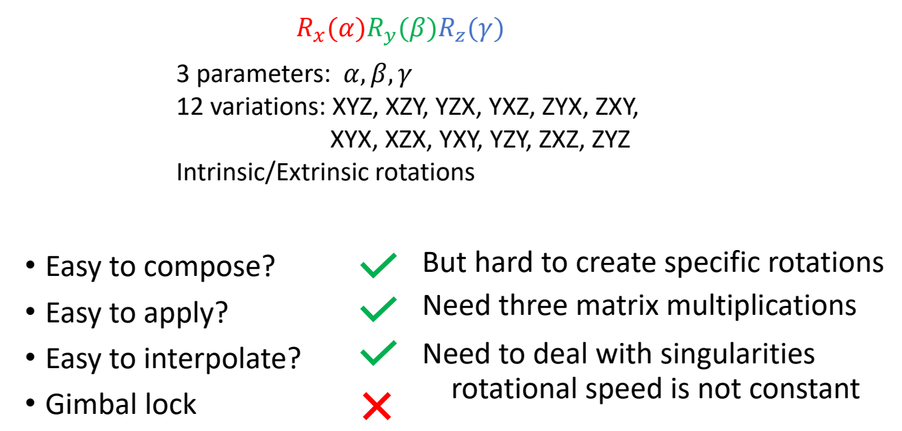
✅ 插值时需注意作用域为 \([-\pi , \pi ]\)，否则容易出现翻转现象。
P107
Rotation Vectors / Axis Angles
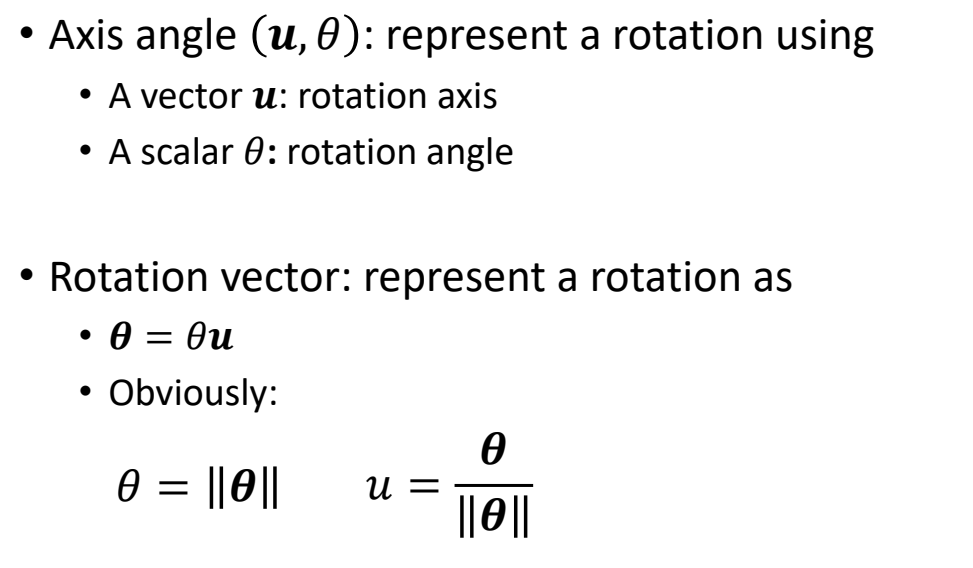
✅ 粗体 \(\theta \)：轴角表示法描述的旋转
✅ 细体 \(\theta \)：以 \(u\) 为轴的旋转角度
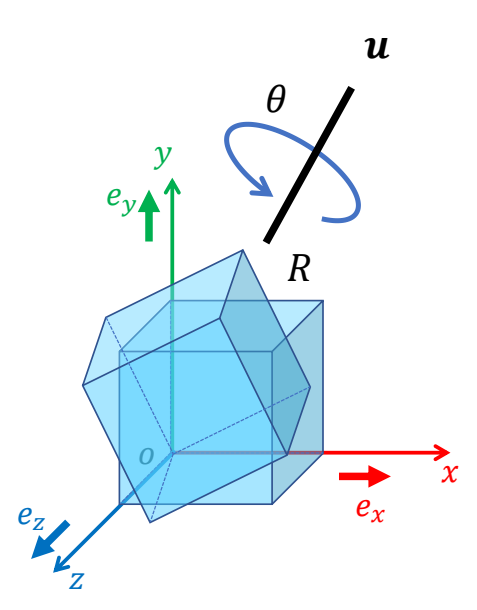
✅ 应用时要先转为旋转矩阵，做旋转组合时也要借助旋转矩阵
P110
Interpolating Rotation Vectors / Axis Angles
线性插值
可以保证插值结果合法，但不能保证旋转速度恒定
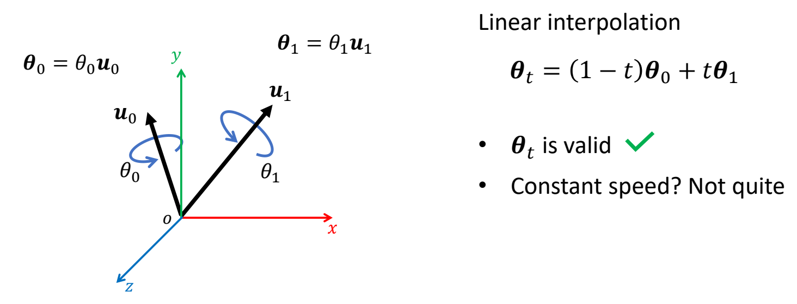
P111
匀速插值
可以保证插值结果合法且匀速，但旋转较复杂
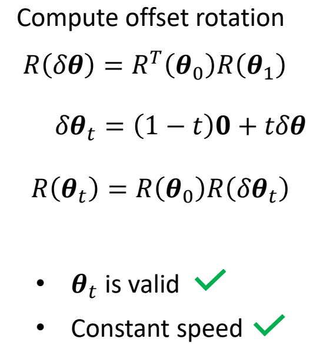
✅ 这个方法没听懂，可以实现允许插值。
P112
结论
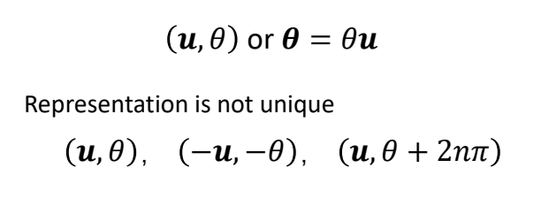
- Easy to compose? \(\quad \quad {\color{Green} \surd } \quad \quad \) But hard to manipulate
- Easy to apply? \(\quad \quad \quad {\color{Red} \times } \quad \quad \) Need to convert to matrix
- Easy to interpolate? \(\quad \quad {\color{Green} \surd } \quad \quad \) Linear interpolation works, but not perfect
- No Gimbal lock \(\quad \quad {\color{Green} \surd } \quad \quad \) need to deal with singularities
P113
Quaternions
P116
定义
-
Extending complex numbers
$$ q =a+bi +cj +dk \in \mathbb{H} ,a,b,c,d\in \mathbb{R} $$ -
\(i^2=j^2=k^2=ijk=-1\)
-
\(ij=k,ji=-k(^*\text{cross product})\)
-
\(jk=i,kj=-i\)
-
\(ki=j,ik=-j\)
$$ q=w+xi+yj+zk \quad \Rightarrow \quad q=\begin{bmatrix} w\\ x\\ y\\ z \end{bmatrix}=\begin{bmatrix} w\\ v \end{bmatrix} $$
$$ q =[w,v]^T \in \mathbb{H} ,w\in \mathbb{R},v\in \mathbb{R}^3 $$
$$ w =[w,0]^T : \text{ scalar quaternion } $$
$$ v =[0,v]^T : \text{ pure quaternion } $$
P117
Quaternion Arithmetic
$$ q =a+bi +cj +dk \in \mathbb{H} ,a,b,c,d\in \mathbb{R} $$
Conjugation: \(\quad \quad q^*=a-bi-cj-dk\)
\(
\)
Scalar product: \(\quad \quad tq=ta+tbi+tcj+tdk\)
\(
\)
Addition: \(\quad \quad q_1+q_2=(a_1+a_2)+(b_1+b_2)i+(c_1+c_2)j+(d_1+d_2)k\)
\(
\)
Dot product: \(\quad \quad q_1\cdot q_2=a_1a_2+b_1b_2+c_1c_2+d_1d_2\)
\(
\)
Norm: \(\quad \quad ||q||=\sqrt{a^2+b^2+c^2+d^2} =\sqrt{q\cdot q}\)
P118
Quaternion Multiplication
$$ q_1q_2=(a_1+b_1i+c_1j+d_1k)*(a_2+b_2i+c_2j+d_2k) $$
$$ q_1q_2=a_1a_2-b_1b_2-c_1c_2-d_1d_2 $$
$$
+(b_1a_2+a_1b_2-d_1c_2+c_1d_2)i
$$
$$
+(c_1a_2+d_1b_2+a_1c_2-b_1d_2)j
$$
$$ +(d_1a_2-c_1b_2+b_1c_2+a_1d_2)k $$
note:
- \(i^2=j^2=k^2=ijk=-1\)
- \(ij=k,ji=-k (^* \text{cross product})\)
- \(jk=i,kj=-i\)
- \(ki=j,ik=-j\)
✅ \(q_1 \cdot q_2\) 和 \(q_1q_2\) 是两种不同的运算。
P120
Conjugation: \(\quad \quad q^*=[w,-v]^T\)
\(
\)
Scalar product: \(\quad \quad tq=[tw,tv]^T\)
\(
\)
Addition: \(\quad \quad q_1+q_2=[w_1+w_2,v_1+v_2]^T\)
\(
\)
Dot product: \(\quad \quad q_1\cdot q_2=w_1w_2+v_1 \cdot v_2\)
\(
\)
Norm: \(\quad \quad ||q||=\sqrt{w_1w_2+v_1 \cdot v_2} =\sqrt{q\cdot q}\)
P122
$$ q_1q_2=\begin{bmatrix} w_1\\ v_1 \end{bmatrix}\begin{bmatrix} w_2 \\ v_2 \end{bmatrix}=\begin{bmatrix} w_1w_2-v_1\cdot v_2\\ w_1v_2+w_2v_1+v_1\times v_2 \end{bmatrix} $$
Non-Commutativity:
$$ q_1q_2\ne q_2q_1 $$
Associativity:
$$ q_1q_2q_3=(q_1q_2)q_3=q_1(q_2q_3) $$
P123
Conjugation:
$$ (q_1q_2)^\ast=q^\ast_2q^\ast_1 $$
Norm:
$$ ||q||^2 = q^ \ast q =qq^\ast $$
Reciprocal:
$$ \begin{matrix} qq^{-1}=1 & \Rightarrow & q^{-1}=\frac{q^*}{||q||^2}\\ q^{-1}q=1 & & \end{matrix} $$
P124
Unit Quaternions
$$ \begin{matrix} q=\begin{bmatrix} w\\ v \end{bmatrix} &||q||=1 \end{matrix} $$
For any non-zero quaternion \(\tilde{q} \):
$$ q=\frac{\tilde{q}}{||\tilde{q}||} $$
Reciprocal:
$$ \begin{matrix} q^{-1}=q^\ast =\begin{bmatrix} w\\ -v \end{bmatrix} &\Leftrightarrow & R^{-1}=R^T \end{matrix} $$
P125
| 2D | 3D |
|---|---|
| 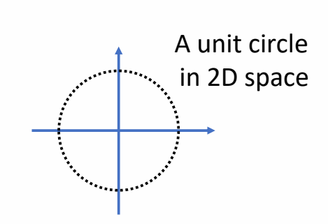 | 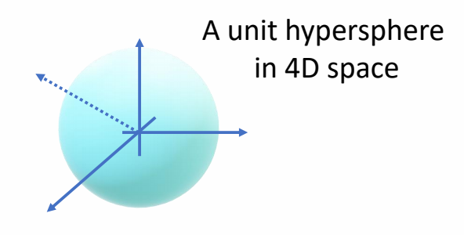 |
| unit complex number | unit quaternion ✅ 所有单位四元数构成 4D 空间上的单位球核。 |
| \(z = \cos \theta + i\sin \theta\) | \(q = \begin{bmatrix} w\\v\end{bmatrix}= [\cos \frac{\theta}{2} , u\sin \frac{\theta}{2}] \quad \mid\mid u \mid\mid = 1\) |
same information as axis angles \((u,\theta)\) But in a different form
P127
轴角表示 -> 四元数表示
Any 3D rotation \((v,\theta)\) can be represented as a unit quaternion
$$ \begin{matrix} \text{Angle}: & \theta =2 \text{ arg } \cos w\\ \text{ Axis}: & u=\frac{v}{||v||} \end{matrix} $$
P128
Rotation a Vector Using Unit Quaternions
已经向量p和单位四元数q，求p经过q旋转后的向量。
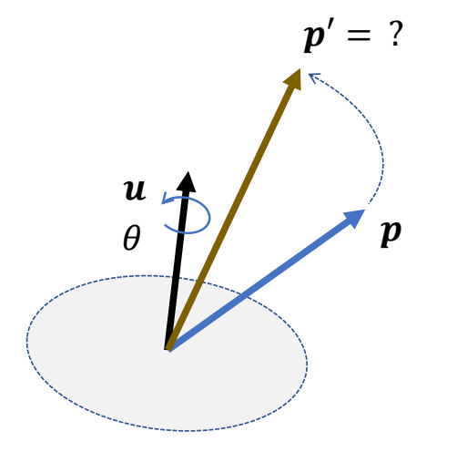
$$ \begin{matrix} \text{Unit quaternion}: & q=\begin{bmatrix} w\\ v \end{bmatrix}=[\cos \frac{\theta }{2} ,u\sin \frac{\theta }{2}]\\ \text{ 3D vector}:p & \text{ Rotation result }: {p}' \end{matrix} $$
Then the rotation can be applied by quaternion multiplication:
✅ 纯方向 \(p\) 可用四元数表示为 \([0 \quad p ]\)
✅ \({p}' = R (q) \cdot p\)
P129
$$ \begin{bmatrix} 0 \\ {p}' \end{bmatrix}=q\begin{bmatrix} 0\\ p \end{bmatrix}q^\ast =(-q)\begin{bmatrix} 0\\ p \end{bmatrix}(-q)^\ast $$
\(\mathbf{q}\) and \(−\mathbf{q}\) represent the same rotation
P131
Combination of Rotations
证明过程跳过，结论：
$$ \begin{matrix} \text{Combined rotation}: & q=q_2q_1 \end{matrix} $$
P133
Quaternion Interpolation
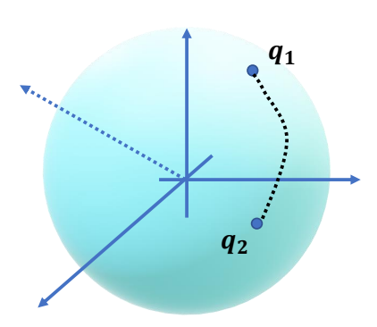
A unit hypersphere in 4D space
✅ 单位四元数表现出来是 4D 空间中的球核，\(q_1q_2\) 是球核上的两个点，希望沿球面轨迹插值。
P135
Linear Interpolation
$$ q_t=(1-t)q_0+tq_1 $$
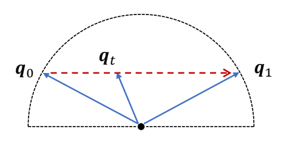
\(q_t\) is not a unit quaternion
P136
Linear Interpolation + Projection
$$ \begin{matrix} \tilde{q}_t=(1-t)q_0+tq_1 & q_t=\frac{\tilde{q}_t }{||\tilde{q}_t||} \end{matrix} $$
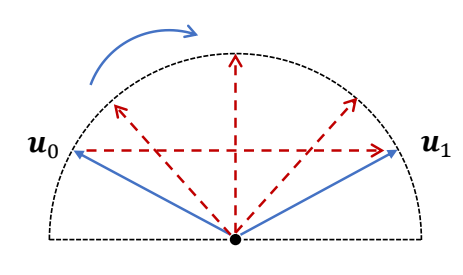
$$ \begin{matrix} q_t \text{ is a unit quaternion}\\ \text{Rotational speed is not constant} \end{matrix} $$
✅ 当 \(u_0＝-u_1\) 时，可能得到某个 \(\tilde{q} _t = 0\)，无法单位化
✅ 解决方法:根据 \(u_0＝-u_0\)，先找到 \(u_0\) 和 \(u_1\) 在数值上最接近的四元数表示。
P137
SLERP: Spherical Linear Interpolation
思考
$$ q_t=a(t)q_0+b(t)q_1 $$
如何设计a和b，让插值结果速度恒定？
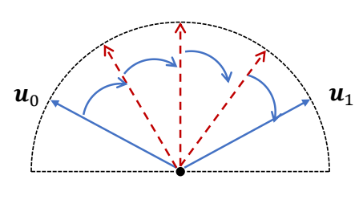
$$ r=a(t)p+b(t)q $$
计算
Consider the angle \(\theta\) between \(p,q\):
$$ \cos \theta =p\cdot q $$
We have:
$$ \begin{matrix} p \cdot r=a(t)p\cdot p+b(t)q\cdot p\\ \Rightarrow \cos t \theta =a(t)+b(t)\cos \theta \end{matrix} $$
similarly:
$$
\begin{matrix}
q \cdot r=a(t)q\cdot p+b(t)\\
\Rightarrow \cos (1- t) \theta =a(t)\cos\theta +b(t)
\end{matrix}
$$
结论
then we have：
$$ a(t)=\frac{\sin [(1-t)\theta ]}{\sin \theta } ,b(t)=\frac{\sin t \theta }{\sin \theta } $$
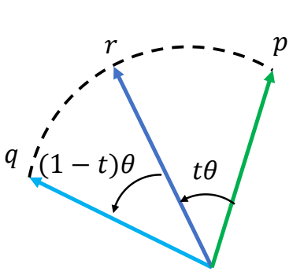
P139
$$ q_t=\frac{\sin [(1-t)\theta ]}{\sin \theta }q_0+\frac{\sin t \theta }{\sin \theta }q_1 $$
$$ \cos \theta=q_0\cdot q_1 $$
P140
结论
Rotations can be represented by unit quaternions
Representation is not unique
\(q, −q\) represent the same rotation
- Easy to compose? \(\quad \quad {\color{Green} \surd }\quad \quad \) Need normalization, hard to manipulate,
- Easy to apply? \(\quad \quad \quad {\color{Green} \surd }\quad \quad \) Quaternion multiplication
- Easy to interpolate? \(\quad {\color{Green} \surd }\quad \quad \) SLERP, need to deal with singularities
- No Gimbal lock \(\quad \quad \quad {\color{Green} \surd }\quad \quad \)
本文出自CaterpillarStudyGroup，转载请注明出处。
https://caterpillarstudygroup.github.io/GAMES105_mdbook/